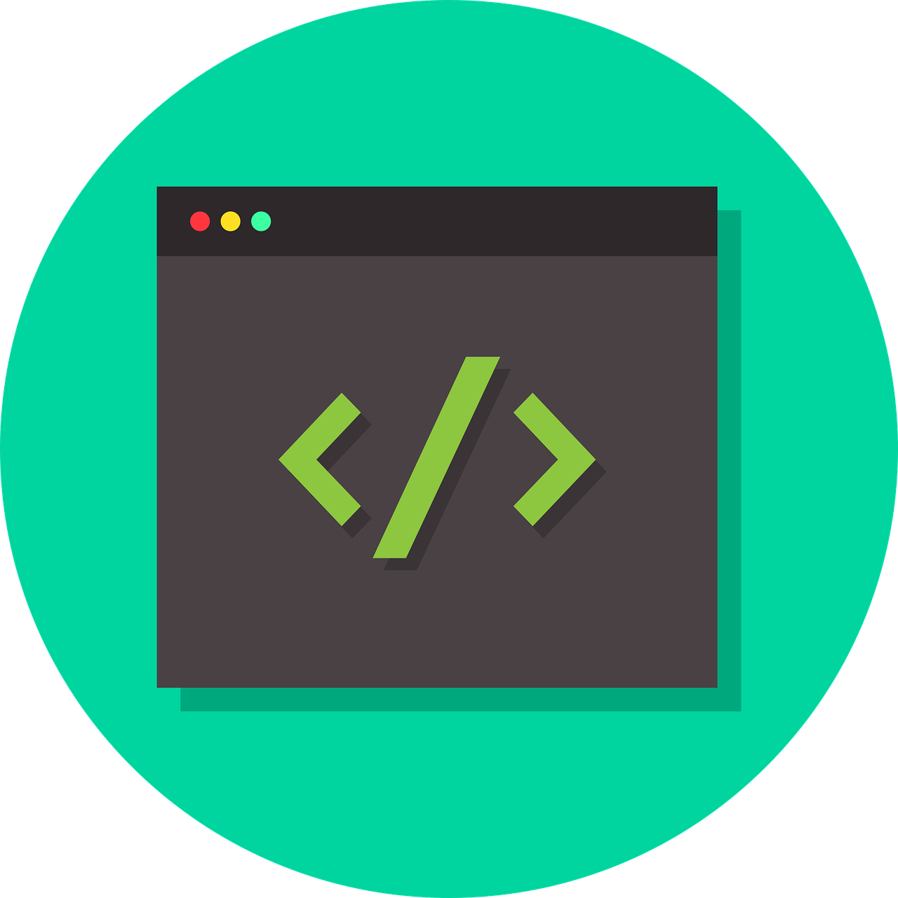

Kemampuan Saya

HTML & CSS
Saya mampu membuat struktur dan tampilan halaman web yang rapi, responsif, dan menarik menggunakan HTML dan CSS dasar maupun lanjutan.

Python
Saya menggunakan Python untuk pemrosesan data, analisis, dan pengembangan backend atau automasi sederhana.

JavaScript
Saya menggunakan JavaScript untuk menambahkan interaktivitas pada website, seperti animasi, form validation, dan DOM manipulation.

C++
Saya menggunakan C++ untuk membuat program dengan performa tinggi seperti pemrosesan data, pengembangan game, dan aplikasi berbasis objek.

Git & GitHub
Saya familiar dengan version control menggunakan Git dan GitHub untuk kolaborasi dan manajemen proyek.